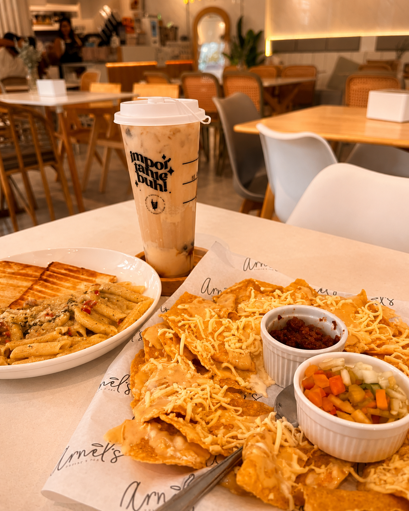
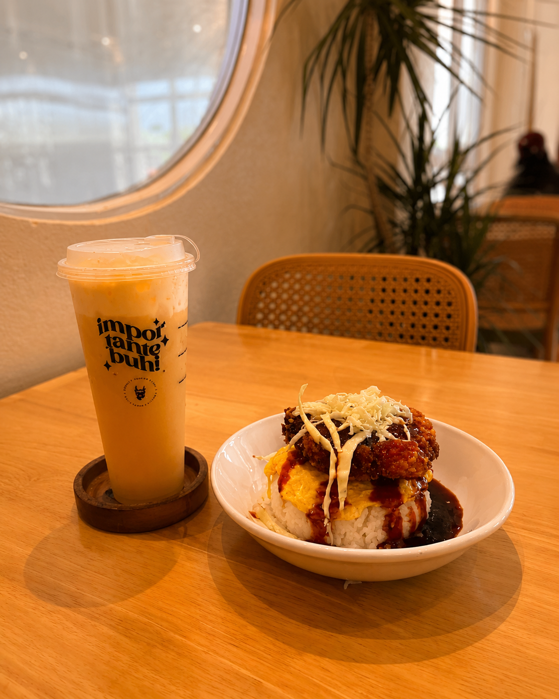
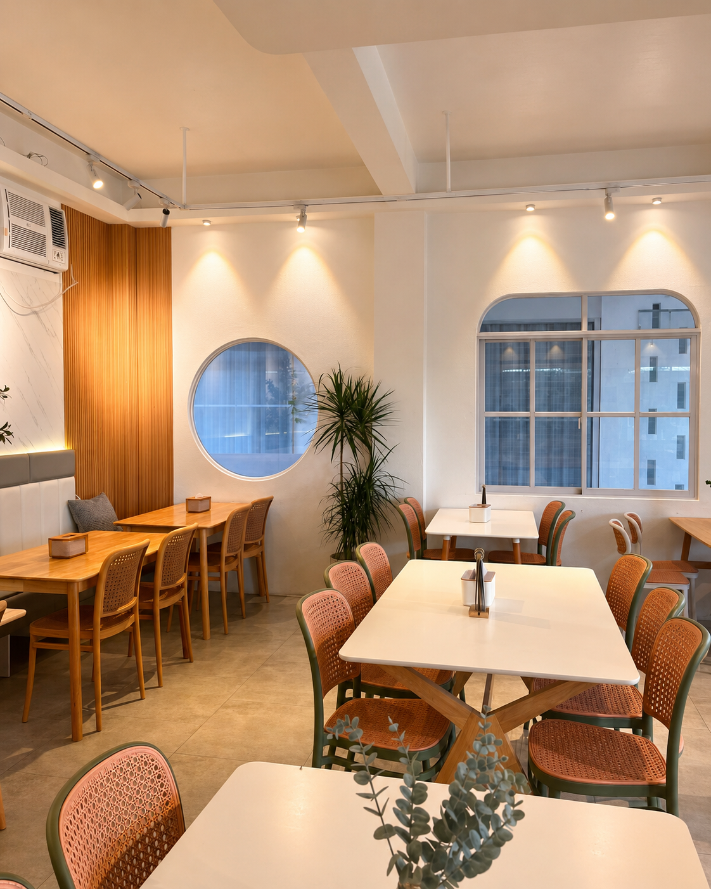
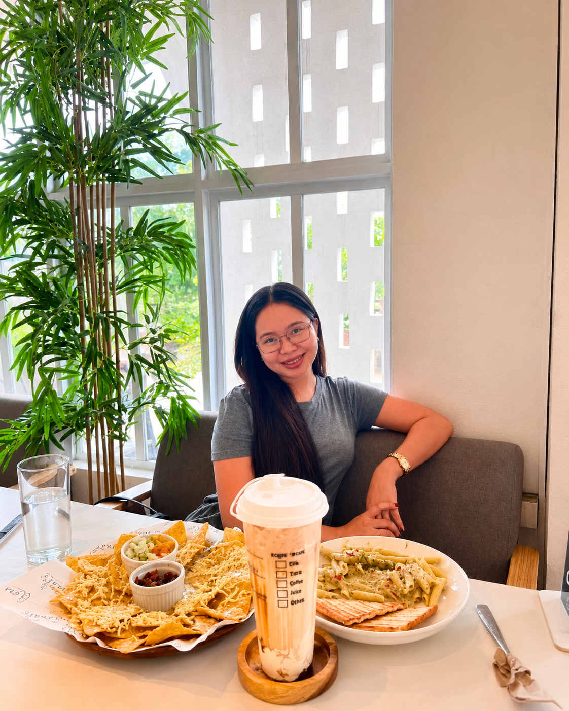

Café Review
A Cozy Café Find in President Roxas: Honest Review
June 27, 2026




Location and Ambiance
Recently, I visited a café in President Roxas, located beside L&N Agriculture Supply. The place is very easy to find because it is along the highway, making it accessible for customers who want to dine in or simply relax.
I really loved the overall look of the café. The color palette is cream and white, which gives a clean, aesthetic, and cozy feeling. The place feels comfortable, relaxing, and perfect for hanging out with friends or having a peaceful café moment.
Menu
Their menu also offers a lot of choices. They have appetizers, rice meals, pasta, burgers, pizza, and even native dishes such as chicken and seafood. For drinks, they offer milk tea, soda, frappe, and coffee. I like that customers have many options depending on what they are craving.
Service
What I appreciated the most was their service. The staff were thoughtful and welcoming. As soon as I arrived, they served me water with ice. After a few moments, they gave me the menu at my table and took my order. This made the experience feel different from the usual cafés here in Capiz, where customers normally pay as they order. In this café, you can sit down first, check the menu, order comfortably, enjoy your food, and pay after eating.
Food and Drinks
For the food and drinks, I was not able to try everything, but I really liked their chicken pesto pasta. It tasted good and was satisfying. Their milk tea, however, was a bit too sweet for my personal preference, but others who enjoy sweeter drinks might still like it.
Final Thoughts
Overall, I really loved the place. The ambiance, menu choices, and thoughtful service made my visit enjoyable. I would surely come back again, especially with friends.